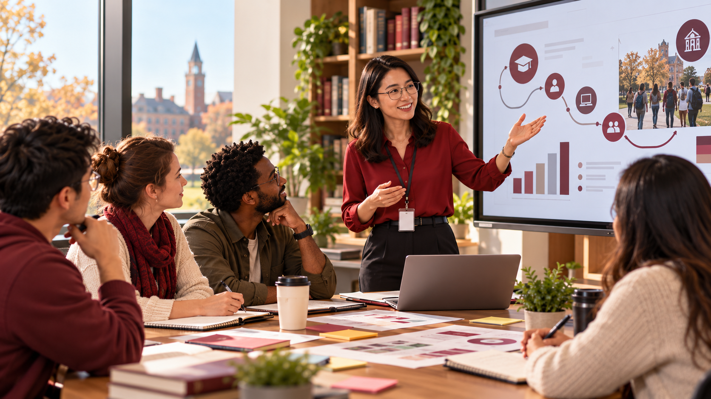

International Journalism Training Program
I coordinated a professional training program for Korean journalists at UNC Hussman School of Journalism and Media. The program combined faculty-led workshops with visits to local media organizations, including PBS North Carolina and WRAL. My responsibilities included program planning, scheduling, and communication with international partners, faculty, and media professionals.
View Full Report →